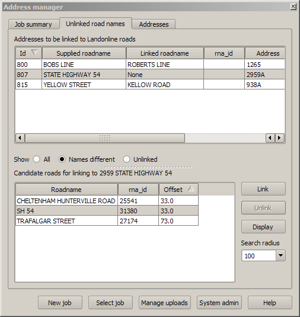

See the overview for a high level description of address uploads
The road linking dialog is used to relate supplied addresses with Landonline road names.
The upper list box shows addresses that are currently not linked with road names, or that have been linked to a road with a different name to that supplied. The radio buttons beneath the choose which addresses are displayed. The default is to only display unlinked roads. "Names different" shows addresses for which the linked road name is different to that supplied. "All" displays all addresses.
The lower list shows nearby Landonline roads (within the radius selected in the search radius box). To link to the landonline road, select the correct road from the candidate list and click the Link button. If a road is incorrectly linked, then click the Unlink button to reset it.
The "Display" button locates the current address in the QGIS map window